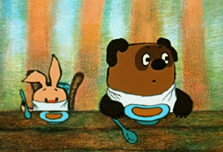

Блок div будет изначально с шириной 100% и за 5 секунд уменьшится до 100px.
<div class="example">
<span>с</span>...<span>е</span>
</div>
.example { width:100%; animation-name:myAnimation 5s infinite; }
@keyframes myAnimation {
from { width: 100% }
to { width: 100px }
}<div class="parent">
<div class="child">картинко</div>
</div>
.parent { perspective: 800px }
.child {
animation: myAnimation 6s linear infinite;
transform-style: preserve-3d; /* указываем что это 3D преобразование */
}
.child:hover { animation-play-state: paused; } /* останавливаем анимацию */
@keyframes myAnimation {
from { transform: rotateY(0deg) }
to { transform: rotateY(-360deg) }
}<div class="example3">
<div class="example3-box">
<a class="example3-box-item" href="#" title="1"><img src="img/1.png"></a>
<a class="example3-box-item" href="#" title="2"><img src="img/2.png"></a>
<a class="example3-box-item" href="#" title="3"><img src="img/3.png"></a>
<a class="example3-box-item" href="#" title="4"><img src="img/4.png"></a>
<a class="example3-box-item" href="#" title="5"><img src="img/5.png"></a>
</div>
</div>.example3 { perspective:1200px; overflow:hidden; }
.example3-box {
position:relative;
transform-style:preserve-3d;
animation:aniIII 18s linear infinite;
transform-origin:0 50%;
}
.example3-box:hover { animation-play-state: paused; }
.example3-box-item { position:absolute; transform-origin:0 50%; }
.example3-box-item img { height:100%; }
.example3-box-item:nth-child(1) { transform: rotateY(0deg) }
.example3-box-item:nth-child(2) { transform: rotateY(-288deg) }
.example3-box-item:nth-child(3) { transform: rotateY(-216deg) }
.example3-box-item:nth-child(4) { transform: rotateY(-144deg) }
.example3-box-item:nth-child(5) { transform: rotateY(-72deg) }
@keyframes aniIII {
from { transform: rotateY(0deg) }
to { transform: rotateY(-360deg) }
}<div class="example-box">
<div class="example-box-item ball_1">
<span class="ball-rotate ball_1-rotate"></span>
</div>
<div class="example-box-item ball_2">
<span class="ball-rotate ball_2-rotate"></span>
</div>
</div>.example-box { position: relative; } /* ... и другие свойства */
.example-box-item {left:0; top:0; position:absolute; } /* ... */
.ball-rotate { position:relative; } /* ... */
.ball-rotate:before { position:absolute; top:25px; left:19px; } /* ... */
/* подключаем анимацию передвижения */
.ball_1 { background:red; animation:anired 8s linear infinite }
.ball_2 { background:green; animation:anigreen 12s linear infinite }
/* подключаем анимацию вращения */
.ball_1-rotate { animation:IVa 1.05s linear infinite }
.ball_2-rotate { animation:IVb 1.57s linear infinite }
/* отключаем анимацию при наведении */
.example4-box-item:hover { animation-play-state: paused }
.example4-box-item:hover .ball-rotate { animation-play-state: paused }
@keyframes IVa {
0% { transform: rotateZ(0deg) }
100% { transform: rotateZ(-360deg) }
}
@keyframes IVb {
0% { transform: rotateZ(0deg) }
100% { transform: rotateZ(360deg) }
}
@keyframes anired{
0% { transform: translate(0,0) }
37.5% { transform: translate(450px,0) }
50% { transform: translate(450px,150px) }
87.5% { transform: translate(0px,150px) }
100% { transform: translate(0,0) }
}
@keyframes anigreen{
0% { transform: translate(0,0) }
12.5% { transform: translate(0,150px) }
50% { transform: translate(450px,150px) }
62.5% { transform: translate(450px,0) }
100% { transform: translate(0,0) }
}<div class="movingBall"></div>
.movingBall { position: relative; }
.movingBall::before {
position: absolute;
background: #ccc;
}
.movingBall::after {
position: absolute;
background: #000;
animation: bounce 2.5s infinite alternate;
}
@keyframes bounce {
from { left: 0 }
to { left: 380px }
}<div class="loading">
<div class="spin"></div>
<p>Загружается...</p>
</div>
.loading { text-align: center; }
.spin {
border: 10px solid #ccc;
border-right-color: transparent;
animation: spin 2s linear 0s infinite normal;
}
@keyframes spin {
from { transform: rotate(0deg) }
to { transform: rotate(360deg) }
}
<div class="example">
<img class="example-item" src="./img/winnie.png">
</div>
.example-item {
filter: hue-rotate(0deg);
animation: disko .14s linear 0s infinite;
}
@keyframes disko {
from { filter: hue-rotate(0deg) }
to { filter: hue-rotate(270deg)}
}<div class="cube">
<div class="side front">1</div>
<div class="side back">6</div>
<div class="side right">4</div>
<div class="side left">3</div>
<div class="side top">5</div>
<div class="side bottom">2</div>
</div>.cube {
font-size: 5em;
transform-style: preserve-3d;
animation: move-origin infinite 2s;
}
.side { position: absolute; }
.front{ transform:translateZ(1em);}
.top { transform:rotateX( 90deg) translateZ(1em);}
.right{ transform:rotateY( 90deg) translateZ(1em);}
.left { transform:rotateY(-90deg) translateZ(1em);}
.bottom{transform:rotateX(-90deg) translateZ(1em);}
.back { transform:rotateY(-180deg) translateZ(1em);}
@keyframes move-origin {
0% { perspective-origin: 0 0 }
25% { perspective-origin: 100% 0 }
50% { perspective-origin: 100% 100% }
75% { perspective-origin: 0 100% }
100%{ perspective-origin: 0 0 }
}В Галактике бушует гражданская война. Корабли повстанцев, нанеся удар с тайной базы, одержали первую победу над жестокой Галактической Империей.
Во время сражения шпионы повстанцев смогли добыть секретные чертежи супероружия Империи — ЗВЕЗДЫ СМЕРТИ, укрепленной космической станции, обладающей достаточной огневой мощью, чтобы уничтожить целую планету.
Преследуемая зловещими агентами Империи, принцесса Лея летит домой на своем корабле, везя с собой украденные чертежи, которые могут спасти её народ и вернуть свободу галактике...
<div class="screen">
<div class="screen-area">
<div class="content">
<p>...</p>
<p>...</p>
</div>
</div>
</div>.screen {
overflow: hidden;
transform-style: preserve-3d;
perspective: 180px;
}
.screen-area {
transform-origin: 50% 100%;
transform: rotateX(25deg);
position: relative; top: -100%;
overflow: hidden;
}
.content {
position: relative; top: 100%;
animation: scroll 40s linear infinite;
}
@keyframes scroll {
from { top: 100% }
to { top: -100% }
}<div class="hearts">
subscribe
<img src="img/heart.svg" class="heart heart-1" height="57px" width="57px">
<img src="img/heart.svg" class="heart heart-2" height="57px" width="57px">
</div>.hearts { position: relative; }
.heart {
position: absolute;
opacity: 0;
}
.heart-1 {
animation: heart-1 5s cubic-bezier(.535,.15,.425,1) -1s infinite;
left: 0;
}
.heart-2 {
animation: heart-2 6s cubic-bezier(.535,.15,.425,1) -2s infinite;
right: 0;
}
@keyframes heart-1{
0% {top:0; transform:scale3d(.5,.5,.5) translate3d(0,0,0) rotate(0);}
50% {opacity:.75; top:-21%;}
100%{opacity:0; transform:scale3d(.7,.7,.7) translate3d(-120%,-100%,0) rotate(-35deg); top:-28%}
}
@keyframes heart-2{
0% {top:0; transform:scale3d(.35,.35,.35) translateZ(0) rotate(0);}
50% {opacity:.5; top:-11%;}
100%{opacity:0; transform:scale3d(.5,.5,.5) translate3d(150%,-120%,0) rotate(35deg); top:-22%}
}